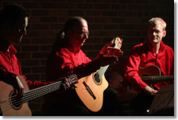
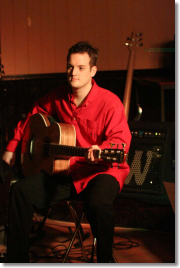
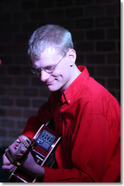

Upcoming Concerts
Friday, 9th November, 2012
Concert in aid of Delamere School, John Alker Hall,
Flixton, Manchester
Acoustic Moods are available for bookings, should you be wishing to hire a band for a function or other event. Current bookings are listed below.
Please contact the band if you would like more information.
Previous Concerts
Friday, 11th November, 2011
Concert in aid of Delamere School, John Alker Hall,
Flixton, Manchester
Saturday, 24th May, 2008
An evening with Acoustic Moods, Manna House, Irwell
Street, Bury
Friday, 23rd November, 2007
Another evening with Acoustic Moods, Urmston Cricket and
Lawn Tennis Club
Saturday, 17th November, 2007
A Concert In Aid of Children In Need, Meir Park Day
Nursery, Stoke-on-Trent
Friday, 9th March, 2007
Manchester Acoustic Guitar Society Presents...
Review:
I was planning a trip to England and found Acoustic Moods had set a concert date for
when I would be there. I knew this was my first opportunity to actually hear one of my
favorite bands live in concert, an opportunity I surely did not want to miss. The
setting was in the Urmston Cricket Club, a roomy but cozy place. I found a seat up front
for best viewing, Chas was busy setting up and testing the sounds, lighting, and
generally making sure all was set properly for the band. The band was tuning guitars,
and settling into getting ready to play.
The lights dimmed, the spotlights came on, and Genesis' "No Son of Mine" filled the room. I knew, instantly, that I was in for a wonderful evening of music. "Afterglow" and "Happy Blues in 7/4" followed, and then one of my favorite originals by the band, "For Heather". Hearing it live for the first time was truly a delight! "Crazy Little Thing Called Love" had the audience clapping along, and a new release, "Suncatcher" which Chris narrated the history behind the song, is sure to be one of their biggest hits to come, followed by an unforgettable rendition of Solsbury Hill.

After the intermission, the band
returned and began playing "Chantler Time", followed by more of my favorites, entangled
and ripples. "L for Leather" was another that will also find a place on my ipod. After
some more original material, the concert was drawing to a close. Acoustic Moods made it
go out with a bang, with a full 11 mins of "Tryptych" which was absolutely remarkably
played. I could go on and on about my thoughts on each song they performed that evening,
it was just a purely fantastic concert and performance by all and an evening with
Acoustic Moods that I will always remember.
Pat Jordan ~ USA